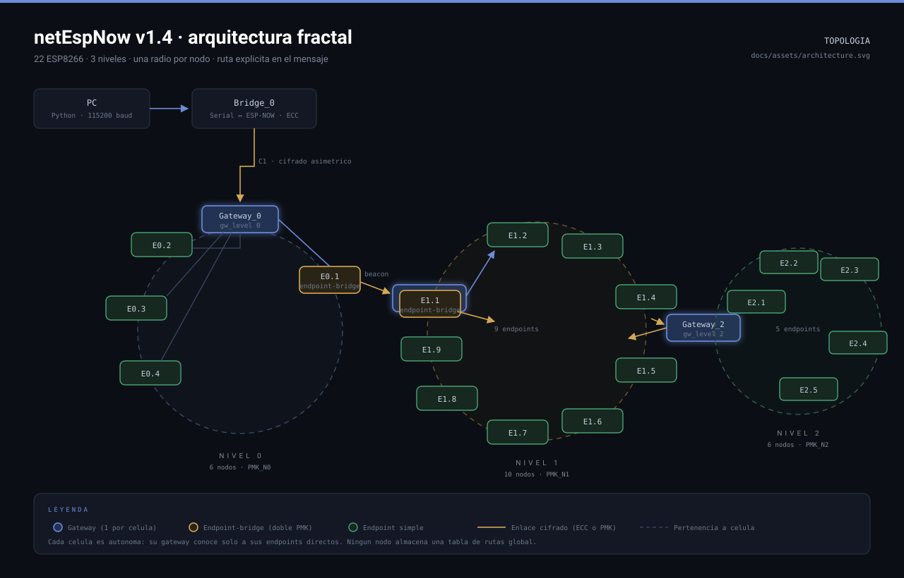
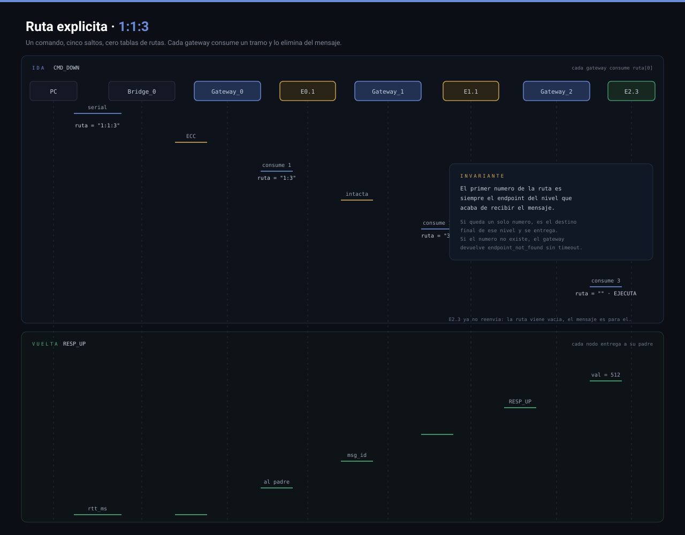
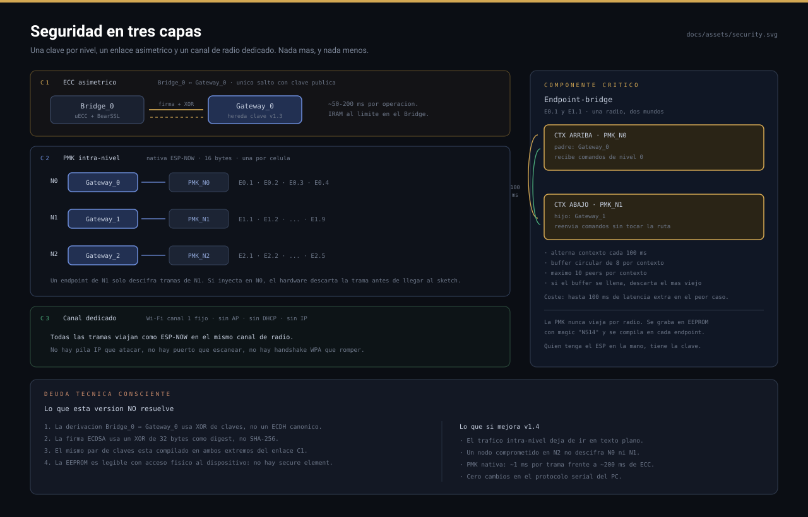

netEspNow v1.1
15 archivosEstrella de seis NodeMCU: un bridge y cinco nodos.
🔒 privadaDe una estrella de seis NodeMCU a una malla fractal de tres niveles diseñada para 22 nodos.

netespnow reúne cinco versiones de una red de sensores sobre ESP-NOW, desde una estrella con cinco nodos hasta el diseño de un árbol fractal de tres niveles y veintidós dispositivos. La última versión especifica cómo llevar la ruta dentro del mensaje, cómo descubrir el gateway de cada célula y cómo reparar una rama sin que los nodos mantengan tablas de topología.
Está pensado para quien despliega ESP8266 en interiores o recintos donde un solo punto de acceso no alcanza y no quiere depender de WiFi ni de un broker. Importa porque documenta el techo de la estrella plana —diecinueve endpoints y un gateway— y porque separa con honestidad lo diseñado de lo implementado: la v1.4 describe la arquitectura, pero su firmware aún no existe.
netespnow documenta una red ESP-NOW de tres niveles y 22 nodos donde el PC calcula la ruta y cada gateway recorta el primer tramo antes de reenviar. El video explica el diseño v1.4, la trama de 38 bytes, el reenvío sin tablas, las PMK por nivel y el dashboard estático que anima el camino de un comando. El firmware de los tres niveles todavía no está publicado.
netespnow documenta una red ESP-NOW de tres niveles y 22 nodos donde el PC calcula la ruta y cada gateway recorta el primer tramo antes de reenviar. El video explica el diseño v1.4, la trama de 38 bytes, el reenvío sin tablas, las PMK por nivel y el dashboard estático que anima el camino de un comando. El firmware de los tres niveles todavía no está publicado.
El repositorio documenta el diseño v1.4 y un prototipo visual; el firmware de los tres niveles aún no está publicado.
Cada carpeta conserva una etapa del proyecto. No se borraron las anteriores: se pusieron en contexto.
Estrella de seis NodeMCU: un bridge y cinco nodos.
🔒 privadaCorrección de la base v1.1; es la que usa espNowDemo.
🔒 privadaPrimera topología multinivel con rutas explícitas.
🔒 privadaDescubrimiento de gateway y reparación de ramas, con más nodos.
🔒 privadaDiseño fractal de tres niveles para 22 nodos; el firmware no está escrito.
Ver carpetaEn ESP-NOW cada nodo necesita una tabla de pares. Si todos hablan con todos, la memoria explota. La solución es una topología explícita.
Una malla completa de 22 nodos obliga a cada ESP8266 a recordar 21 pares, con buffers y direcciones MAC. La RAM se vuelve el límite antes que la radio. Además, una ruta rota deja nodos aislados sin un mecanismo claro de recuperación.
Tres niveles con rutas explícitas como 1:1:3. Cada nodo solo conoce a su padre y a sus hijos directos. Los beacons cada 2 s mantienen viva la topología y disparan la auto-reparación cuando un enlace desaparece.
La red se descubre y se repara sola, sin un coordinador central que lo sepa todo.
Cada nodo emite un beacon cada 2 segundos con su identificador y su nivel.
Un nodo nuevo escucha beacons, elige un padre disponible y se registra con una ruta explícita.
El mensaje viaja de hijo a padre hasta el nodo raíz. La ruta 1:1:3 identifica el camino sin tablas globales.
Si el padre deja de responder, el nodo promueve otro candidato y reconstruye su rama.
La misma regla se repite en cada nivel: un padre, varios hijos, rutas que no se confunden.

El identificador 1:1:3 dice nivel y posición. No hace falta una tabla de enrutamiento global.
Cada nivel usa su propia PMK y ECC para el intercambio. Un nodo comprometido no abre toda la red.
Dos segundos sin beacon es una señal de vida perdida. La recuperación es local, no central.
La elegancia está en lo que cada nodo no necesita saber.
El mismo patrón de padre-hijos se repite en los tres niveles.
La pérdida de un padre dispara la elección de un reemplazo en la rama afectada.
Claves distintas por nivel y ECC para el intercambio inicial.
Cada nodo guarda solo sus vecinos directos: 300–500 bytes en el caso típico.
El latido que mantiene la topología y detecta enlaces caídos.
Identificadores como 1:1:3 hacen que el camino sea inspeccionable sin herramientas externas.
Los diagramas se mantienen en el repositorio y se actualizan con el código.


C++ sobre Arduino core para ESP8266, ESP-NOW como transporte y un esquema de rutas y claves propio. El diseño está completo; la implementación es el siguiente paso.
ESP8266 ESP-NOW C++ Arduino ECC PMK PlatformIO Este repositorio documenta el diseño y el plan de implementación. No se presenta como firmware terminado.
netEspNow · estructura
$ git clone https://github.com/wanderc137/netEspNow-v1.4 $ cd netEspNow-v1.4 # Leer docs/developer.md: diseño, rutas y plan de implementación # La implementación se organiza en src/ y tools/
Cada decisión, cada límite y cada comando están documentados en el repositorio. Sin folletos: lo que funciona se muestra, lo que no, también.
Las primeras versiones existen para que estos errores no se repitan: cada una dejó una decisión de diseño verificable.
La v1.3 funcionaba con siete ESP8266 y un RTT de 1385 ms, pero todos los nodos debían alcanzar el único gateway y el límite de peers fijaba diecinueve endpoints. Añadir un nivel de anidación no era posible sin una tabla de rutas. La v1.4 reemplazó la estrella por células con ruta explícita.
La auditoría encontró un ECDH simulado con XOR de claves, un digest también XOR en lugar de SHA-256 y el mismo par hardcodeado en ambos extremos; además, gateway y nodos hablaban en texto plano. La v1.4 añadió PMK por nivel y dejó la deuda del ECC documentada para v1.5.
La v1.1 conectaba cinco NodeMCU y un bridge USB en estrella, sin cifrado ni autenticación. Cualquier dispositivo en el canal podía escuchar o inyectar tramas con el node_id correcto. La v1.2 introdujo la puerta de enlace con cifrado asimétrico, aunque su implementación posterior se reveló débil.
Seis criterios con la misma escala en todo el catálogo, para comparar sin marketing.
v1.1-fix1 para una estrella; v1.3 si necesitás reparación de ramas.
No como firmware. Es un diseño de tres niveles para 22 nodos, documentado y no implementado.
La v1.4 está diseñada para 22; las anteriores se probaron con menos.
No. ESP-NOW es punto a punto; el bridge puede exponer los datos después.
Son los nombres originales de las carpetas. Se conservan para mantener la trazabilidad.
Usá esta familia como base para netespnow. Está documentada para que puedas entenderla, ejecutarla y continuarla sin adivinar.